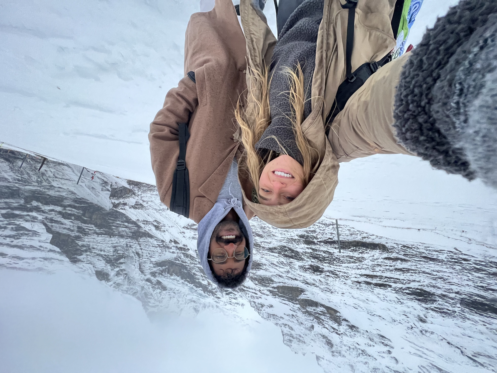

About Steven
I'm Steven Madasu, a senior at the University of Iowa studying Business Analytics and Information Systems with a minor in Entrepreneurial Management. I'm especially interested in how data, AI, and product design come together to build technology that people actually love to use. Right now I'm focused on product management and spend a lot of time thinking about how to turn ideas into real products — from defining the problem to designing the experience and figuring out how it fits into a larger business strategy.
Outside of school and internships, I'm constantly building or experimenting with new ideas. I enjoy working on startup concepts, exploring AI tools, and thinking through product strategy the way top tech companies do. I'm also a big fan of sports and competition — especially tennis — and I like staying active, traveling, and trying new experiences whenever I can. I'm naturally curious about how things work, whether it's technology, business, or the systems that shape the world around us.
